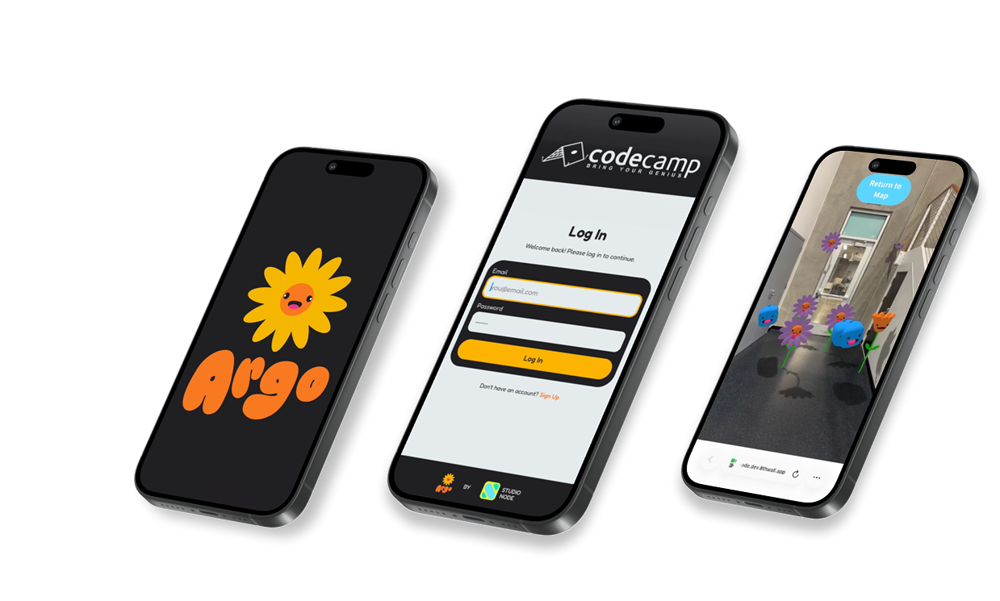
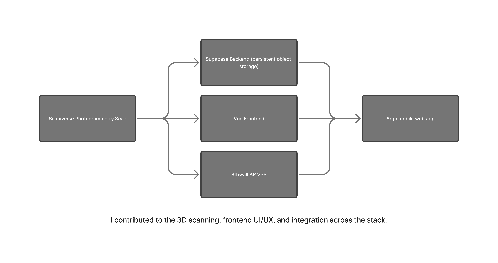
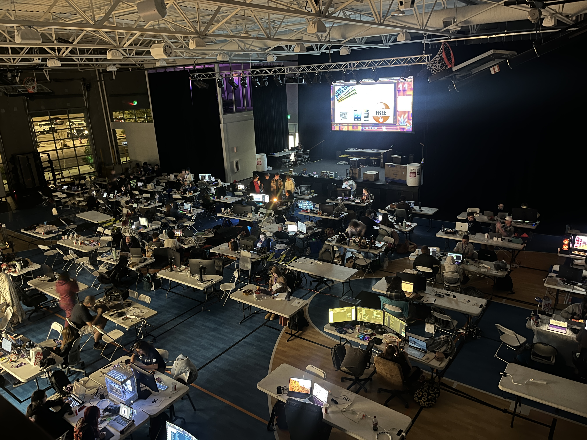
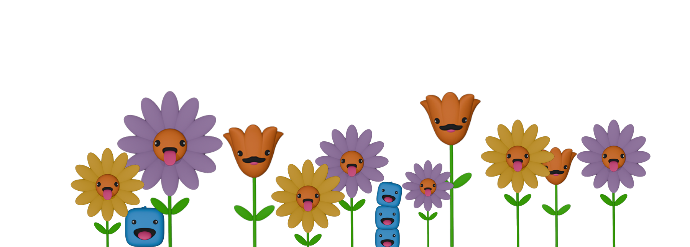
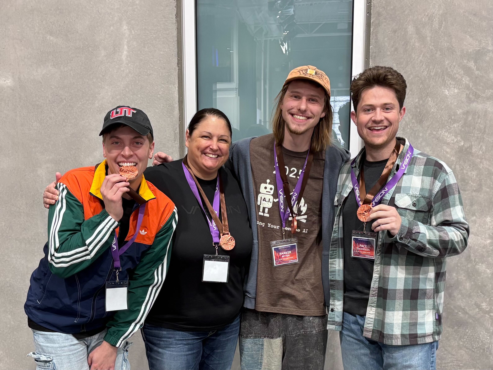

A persistent AR experience built in 24 hours — leave 3D art in a real space for others to
discover.
· Built in a 24-hour sprint · Won 3rd place · Invited to present

Overview
Argo is a web-based AR prototype that lets people place 3D objects in a real physical space and have those
objects persist for other users to discover later — like digital graffiti. I built it with a team of four at the
Southern Utah Code Camp, a 24-hour sprint competition. We conceived the idea, designed and developed a working
full-stack prototype, and demoed it by the deadline. Our team took home 3rd place and was invited to present the
project at a local tech and entrepreneurship luncheon.
Role & Scope
I served as the frontend designer and developer on the team, and helped lead the overall product direction.
My specific contributions included:
Designing and building the UI, including the login screen and the tap-to-place interaction flow
Handling the integration between our frontend and 8th Wall’s AR platform, including finding workarounds
for free-plan limitations to make the experience feel polished
Performing 3D photogrammetry scans of the environment using Scaniverse to create the spatial map the AR
content anchored to.
The rest of the team brought complementary skills: Pace Thompson built the Vue app framework, Suzanne Szabo
handled the Supabase backend for persistent object storage, and Jordy Voss created the 3D avatar assets users
could place in the space.
The Concept
We came into the code camp with an idea: what if you could leave art in a physical space that other people
could find later through their phone? Imagine walking into a room and discovering 3D objects, characters, and
messages that previous visitors had placed there — a shared, evolving digital gallery layered on top of the
real world.
The concept we called “digital graffiti” had potential applications beyond art — branded activations, event
experiences, interactive wayfinding — but for the sprint, we focused on proving the core mechanic: can a user
place a 3D object in a real space, and can another user see it there later?
The 24-Hour Build
Tech Stack
We chose 8th Wall for the AR layer because it was the most accessible web-based AR
platform available, using A-Frame and Visual Positioning System (VPS) to anchor content to real environments.
The app was built in Vue, with Supabase handling the backend so placement data could persist across sessions and
users. I used Scaniverse to capture 3D photogrammetry scans of Vasion’s gym, where the code camp was held, to
create the spatial map everything anchored to.

The Process
We divided responsibilities early and worked in parallel. While I handled the frontend
and AR integration, the rest of the team built the backend and created 3D assets. 8th Wall threw us constant
curveballs — free-plan restrictions, quirks in how it handled spatial anchoring, and integration challenges with
our Vue app. A lot of my time was spent finding creative workarounds to make the experience feel more polished
than the platform’s free tier typically allows.

The 2 AM Problem
The biggest obstacle had nothing to do with code. We’d scanned the gym with Scaniverse while the overhead
lights were on, and the AR system used those lighting conditions to match the 3D scan to the real environment.
At around 2 AM, the venue turned off the lights so other participants could sleep. Our photogrammetry scans
immediately stopped working — the system couldn’t match the dark room to the brightly lit scan.
We couldn’t test our app for roughly six hours. Pace and I stayed up the entire night, kept coding what we
could, and eventually convinced the organizers to turn the lights back on so we could resume testing. It was
frustrating in the moment, but it taught us something real about the constraints of environment-dependent AR —
and about persistence in more ways than one.
What We Made
By the end of the 24 hours, we had a working full-stack AR prototype. A user could open
the web app on their phone, log in, see the mapped space through their camera, tap to place 3D objects in the
real environment, and leave. Another user could then open the app in the same space and see those objects
exactly where they were placed. The core promise — persistent, shared AR content anchored to a real location —
was proven.

Outcome
We placed 3rd in the competition and were invited to present Argo at a local tech and
entrepreneurship luncheon. The audience included other code camp participants and members of the broader tech
community. The response was enthusiastic — people immediately understood the potential for branded experiences
and event activations.

Key Takeaways
Ship under pressure. 24 hours to go from concept to working demo forced us to make fast
decisions, cut scope ruthlessly, and focus on proving the one thing that mattered. We couldn’t build
everything we imagined, but we shipped the core experience.
Collaboration multiplies output. This was my first real experience building something
meaningful with a team in a high-pressure, in-person environment. Dividing work by strength and trusting each
other to deliver their piece was the only way we finished on time. I came away valuing collaborative,
in-person work much more than I expected.
Real-world constraints are part of the design. The lights-off incident wasn’t just a setback
— it revealed a fundamental challenge in environment-dependent AR. Lighting, scanning conditions, and physical
context all affect whether the technology works. Designing for the real world means accounting for the real
world’s messiness.
Reflection
Argo is the project in my portfolio that shows I can collaborate, ship under extreme constraints, and work
across the full stack from UI design to AR integration to physical environment scanning. It’s also the project
that made me realize how much I thrive in team environments — the energy of building something together in
person, under a deadline, with people who bring different skills to the table.
The concept of persistent, shared AR has real commercial potential, and I’d love to revisit it with more time
and fewer free-plan restrictions. But even as a 24-hour prototype, Argo proved the idea works — and that was
the whole point.